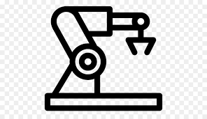
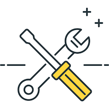
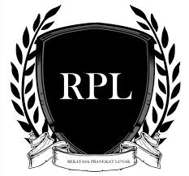

Tata Busana
Program studi Tata Busana sering juga disebut dengan nama Fashion Design. Pada Program studi ini di pelajari teknik mendesain, belajar membuat pola, menjahit, dan seluk beluk produksi busana atau fashion.
Tata Boga
Program studi Tata Boga mempelajari teknik penyajian makanan dengan memperhatikan kualitas, rasa, estetika, dan kebutuhan gizi. Akan mempelajari mengolah berbagai hidangan dari daerah dan negara.

Otomasi Industri
Teknik otomasi insustri adalah suatu teknik yang menerapkan sistem pengajaran yang mengarah ke bidang perakitan sistem-sistem di dunia industri yang berbasis otomasis/outomatic.
Teknik Listrik
Teknik Tenaga Listrik adalah bidang ilmu yang mempeljari teknik-teknik yang berhubungan dengan tenaga listrik dan permasalahannya sehingga tenaga listrik dapat disalurkan dengan baik.

Teknik Mesin
Teknik Mesin adalah ilmu teknik mengenai aplikasi dari prinsip fisika untuk analisis, desain, manufuktur, dan pemeliharaan sebuah sistem mekanik.

Rekayasa Perangkat Lunak
Program Rekayasa Perangkat Lunak adalah satu bidang profesi yang mendalami cara-cara pengembangan perangkat lunak termasuk pembuatan, pemeliharaan, menajemen organisasi pengembangan perangkat lunak dan menajemen kualitas.